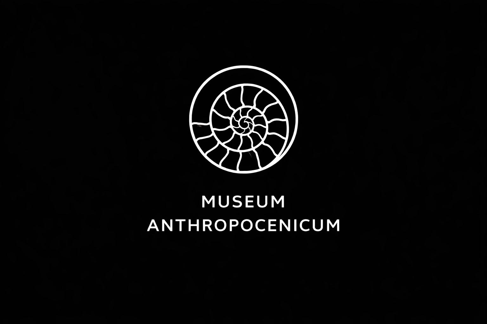

01
Un futur sans nous
Le musée imagine des observateurs revenus trop tard : assez tard pour que les fonctions se soient perdues, mais pas assez pour que les matières aient disparu.

Le musée imagine des observateurs revenus trop tard : assez tard pour que les fonctions se soient perdues, mais pas assez pour que les matières aient disparu.
Ce que nous appelons aujourd’hui banalité devient ici document majeur. L’emballage, la semelle, le filet ou la bouteille racontent peut-être plus de nous que les monuments que nous pensions durables.
AEMA0001 constitue une mission de terrain : un lieu où les signes les plus ordinaires de notre époque apparaissent soudain comme les indices incomplets d’une civilisation disparue.
Le player ci-dessous restitue l’audio report de l’expédition AEMA-0001. Il accompagne la traversée du musée comme un document de mission, à la fois compte rendu, dérive et relevé de présence.
Lire les objets contemporains comme symptômes d’une production excédentaire : trop de matière, trop peu de durée d’usage, trop de survivance après la fonction.
Déplacer le regard dans le temps pour faire apparaître notre monde sous sa forme la plus nue : non comme actualité, mais comme dépôt, comme reste, comme énigme.